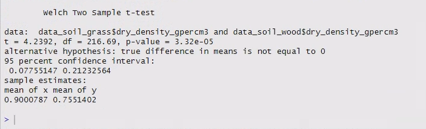

20 Question 2 - two sample t-test
Research Question:
Is there is a significant difference between the body mass of male and female Adélie penguins from the Palmer Island Archipelago?
Because we are comparing two samples (males and females), we need to do a two sample t-test.
However, make sure you can use The Flow Chart™ to come to the same conclusion based on the research question and data.
Questions:
Looking at the research question and the data:
- What do you think the outcome variable is?
- What kind of variable is it (e.g. categorical, discrete, continuous)?
- What do you think the predictor variable is?
- What kind of variable is it (e.g. categorical, continuous)?
Looking at The Flow Chart™:
- How far could you navigate through The Flow Chart™ based on your answers above?
- Can you get all the way to a test? Why or why not?

20.1 Prepare the data
Right now the male and female data are combined into one data frame.
The t-test function in R needs the two samples provided as separate vectors (remember that a data frame column is just a fancy vector).
This means you’ll need to filter or subset the data into two new dataframes.
If you are only finding an exact match for one value and not piping together multiple functions (like na.omit()), you can use the base R function subset() to subset your data instead of the tidyverse function filter().
Use the code below - you will need to duplicate it for females as well.
peng_data_adelie_male <- subset(peng_data_adelie, sex == "male")20.2 Check assumptions
You’ve already tested the combined-sex body mass data for Normality, but it is a good idea to test the single-sex data as well.
Questions:
- Are the data for Adélie penguin body mass Normally distributed for both sexes?
- How big are your samples?
- Putting all of this information together, can we proceed with a t-test?
20.3 Hypotheses
Next, we write down our null and alternative hypotheses.
\(\mathrm{H}_0\): The body mass of male Adélie penguins is not significantly different to the body mass of female Adélie penguins.
\(\mathrm{H}_\mathrm{A}\): The body mass of male Adélie penguins is significantly different to the body mass of female Adélie penguins.
20.4 Two-sample t-test
To compare two samples of data, you will need to perform a two sample t-test.
R will automatically perform a two sample t-test if you give the function t.test() two samples of data as the only arguments.
Write the code below, substituting in your data frames and columns.
# two sample t-test
t.test(mydf1$col, mydf2$col)The results should look something like this (although not exactly, because this test was run on different data!):

Once again, the output lets us know which t-test it has run at the top, in this case a Welch two sample t-test.
There are two types of two sample t-tests:
- Student’s t-test, which assumes equal variances of the two samples
- Welch’s t-test, which does not assume equal variances of the two samples, and accounts for this with fractional degrees of freedom (notice it is not a whole number in the output!)
R runs Welch’s t-test as at the default, as it is considered the better test because:
- If the variances are equal, Welch’s t-test will provide the same results as Student’s t-test.
- If the variances are not equal, then you should be using Welch!
For this reason, it is generally recommended to simply always use Welch’s t-test.
If you want Student’s t-test you can add the optional argument: var.equal = TRUE. However, this requires that you do an F-test for equal variance first!
Similar to the one sample test, the test output also provides:
- the name of our data samples
- the test statistic (t)
- the degrees of freedom (df)
- the p-value
- the alternative hypothesis
- the 95% CI of the difference between the two sample means
- the mean values of both samples
Question:
Based on your two sample t-test results:
- Is P < 0.05?
- Should you reject or accept the null hypothesis?
Write down a formal sentence describing the outcome of the test as a comment in your script.
You sentence should include:
- the overall result of the research question (i.e. are the means the same or different?)
- the estimated means and SEs for both samples
- the test statistic, t
- the degrees of freedom
- the p-value
As before, the last three quantities are usually provided in parentheses at the end of the sentence.
Refer to the previous chapter to remind yourself how to calculate the SE, and to see an example sentence, if needed.